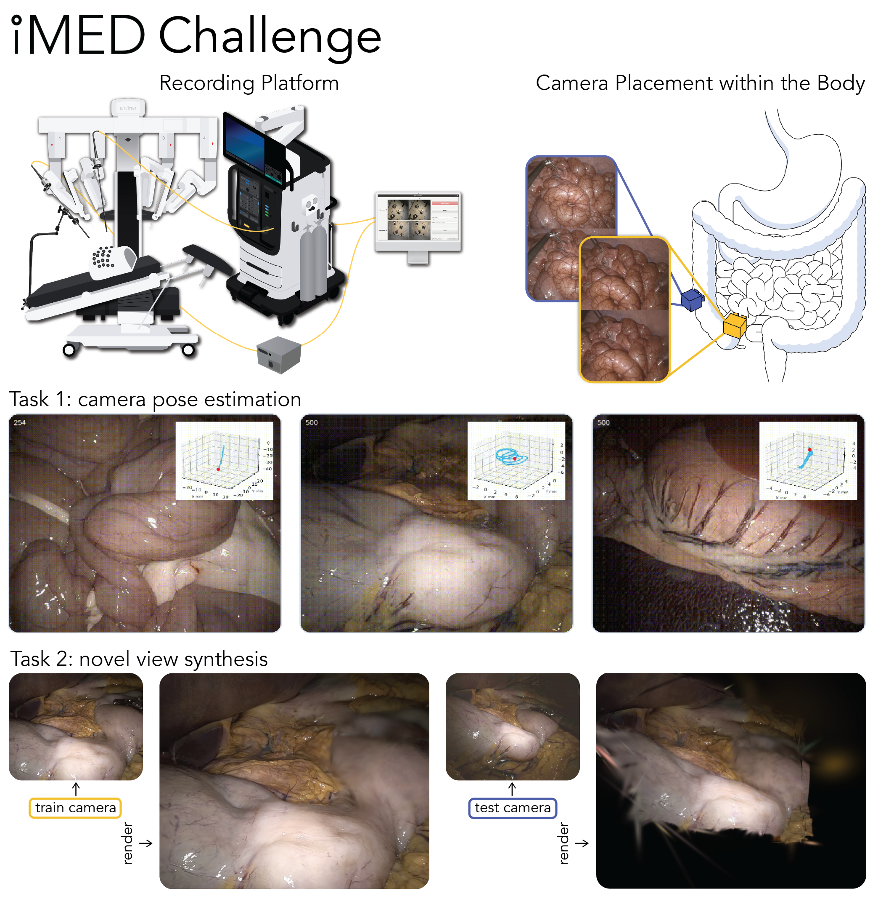

iMED Challenge 2026

Description
The iMED Challenge is a sub-challenge of EndoVis 2026 at MICCAI 2026. Vision-based 3D reconstruction is critical for real-time guidance systems, autonomous camera control, and digital twins in robot-assisted minimally invasive surgery. Surgical environments remain especially challenging because of constrained viewpoints through narrow trocar ports, tissue deformation from respiratory motion and tool interactions, non-Lambertian surfaces with strong specularities, and transient phenomena such as smoke and bleeding.
Tasks
Task 1: iMED PE
Metric: ATEEstimate accurate per-frame relative camera poses between two endoscopes in deformable surgical environments.
Task 2: iMED NVS
Metrics: PSNR, SSIMSynthesize novel views of deformable surgical scenes from a held-out endoscope viewpoint using a train-on-one-endoscope, test-on-another protocol.
Key Dates
- April 15, 2026 Registration opens and training dataset released on Synapse.
- May 15, 2026 Starter Docker containers and baseline submission templates released on Synapse.
- June 30, 2026 Public validation leaderboard opens.
- August 15, 2026 Team registration deadline. Team attribution and registration confirmation details TBA.
- September 1, 2026 Final Docker image submission deadline for full challenge solutions.
- September 8, 2026 Structured methods report / write-up due. Report submission format TBA.
- September 27, 2026 Challenge Day at MICCAI 2026 / EndoVis, Strasbourg, France.
Organizers
| Name | Institution |
|---|---|
| Sierra Bonilla | University College London |
| John Han | Vanderbilt University |
| Tianyi Song | University College London |
| Adam Schmidt | Intuitive Surgical, Inc. |
| Omid Mohareri | Intuitive Surgical, Inc. |
| Francisco Vasconcelos | University College London |
| Sophia Bano | University College London |
Sponsors